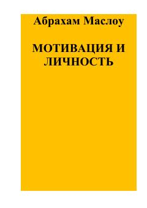

МИInson ehtiyojlari va motivatsiyasining gumanistik nazariyasiga bag'ishlangan mashhur psixologik asar.
Ushbu kitob mashhur psixolog Avraam Maslouning inson motivatsiyasi va shaxsiyati haqidagi fundamental asaridir. Muallif an'anaviy psixologik yondashuvlarni tanqid qilgan holda, inson tabiatining oliy qirralari va ehtiyojlar ierarxiyasini gumanistik nuqtai nazardan ochib beradi. Asarda xolistik yondashuv, o'zini o'zi namoyon qilish va inson imkoniyatlarining cheksizligi kabi muhim mavzular muhokama qilinadi.